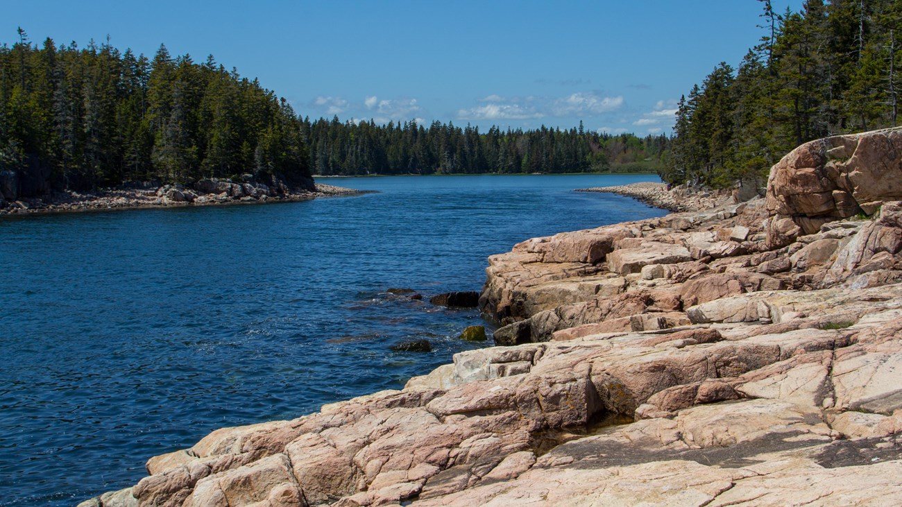
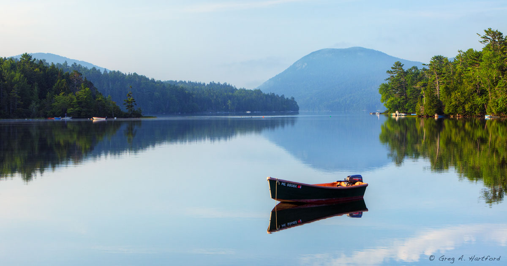

Lodging
Day 6
Long Pond + Quiet Side
Timing
| Time | Activity |
|---|---|
| 8:00 AM | Breakfast & drive to Pretty Marsh Road |
| 9:00 AM | Pick up canoe/kayak — National Park Canoe & Kayak Rentals |
| 9:15 AM – 12:15 PM | Paddle Long Pond (3-hour rental) |
| 12:30 PM | Return boats, lunch nearby or back in Bar Harbor |
| 2:30 PM | Afternoon trail — Wonderland or Ship Harbor |
| 4:30 PM | Bass Harbor Head Light photo stop |
| 6:00 PM | Dinner — quieter evening before lobster cruise |
Parking
Quiet side lots
- 145 Pretty Marsh Road: Rental shop parking for Long Pond launch.
- Route 102A pull-offs: Wonderland and Ship Harbor trailheads.
- Bass Harbor Head Light: Small lot — short visit, be patient in summer.
Places & Directions
Rentals
National Park Canoe & Kayak Rentals
145 Pretty Marsh Road, Mount Desert, ME 04660Long Pond launch — reserve your boats ahead.
Trail
Wonderland Trailhead
Wonderland Trailhead, Seawall Road, Acadia National Park, METrail
Ship Harbor Trailhead
Ship Harbor Trailhead, Seawall Road, Acadia National Park, MEPhoto stop
Bass Harbor Head Light
Bass Harbor Head Light, Lighthouse Road, Tremont, ME 04653Plan
Morning
Long Pond paddle
- National Park Canoe & Kayak Rentals — 145 Pretty Marsh Road.
- Rental options: 3-hour, 6-hour, or full day — 3 hours is plenty for families.
- Calm freshwater lake surrounded by forest — different vibe from the ocean side.
- Kids age 10 and under must wear a PFD at all times on the water.
- Adults need a Maine fishing license if bringing rods — kids under 16 exempt.
Afternoon
Wonderland or Ship Harbor
- Wonderland Trail: Easy coastal walk to rocky shore and tide pools.
- Ship Harbor Trail: Loop through woods to a sheltered harbor cove.
- Both are on the quiet "west side" — fewer crowds than Park Loop Road.
Late afternoon
Bass Harbor Head Light
- Acadia's iconic lighthouse — classic Maine postcard shot.
- Short walk to viewing areas; keep kids away from cliff edges.
- Best light in late afternoon and evening.
Alternatives
If you want more hiking
Swap the afternoon coastal walks for Beech Mountain Loop or Acadia Mountain Trail — both offer summit views on the west side with fewer tourists.
Trails
Beech Mountain Loop
Fire tower views on the west side — quieter alternative to Bubble Rock crowds.
View on AllTrailsAcadia Mountain Trail
Short steep climb to Somes Sound overlook — dramatic fjord views.
View on AllTrailsPhoto Gallery



Videos
Acadia Always (includes ponds & paddling)
Bar Harbor Guide (Bass Harbor Light)
Confirm before you go
Day 7 — Lobster cruise
- Bar Harbor Whale Watch: Confirm departure time and check-in location.
- Bring jackets — it's cold on the water even in August.
- Arrive early for parking and boarding.
- Review Great Head trail plan for the morning before the cruise.